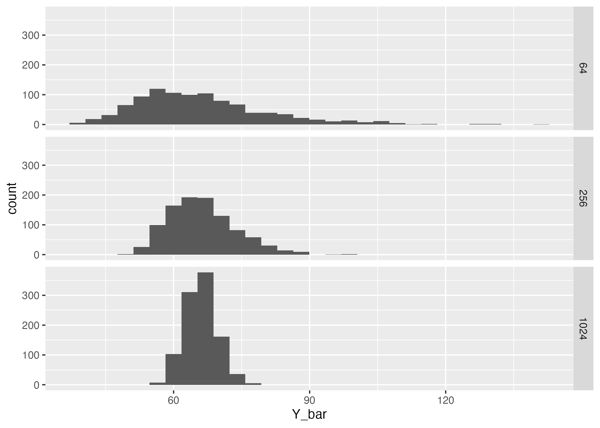

Understand the sampling distribution of an estimate
Investigate sampling error
Calculate standard error of the mean
Calculate confidence intervals
3.2 Learning the Tools
3.2.1 Simulating your own sampling distributions
For this lab we will simulate our own sampling distribution of the mean. Here we will use the penguins dataset from the palmerpenguins package. To simulate the sampling distribution you’ll treat the data in the penguins dataset as the entire population (it isn’t but we can pretend) and take many random samples from it, calculate the sample mean \(\bar{Y}\) for each, and plot the distribution.
3.2.1.1 Randomly sampling rows
The dplyr package offers tools that allow us to easily produce a random sample of rows from a dataset using the function slice_sample(). You may need to install the dplyr package, refer back to Lab 02 for how to do that. With the slice_sample() function we can, for example, sample 5 rows at random from the penguins data set by doing the following:
library(dplyr)samp <-slice_sample(penguins, n =5)samp
species island bill_len bill_dep flipper_len body_mass sex year
1 Adelie Biscoe 38.2 18.1 185 3950 male 2007
2 Adelie Dream 36.5 18.0 182 3150 female 2007
3 Chinstrap Dream 50.8 18.5 201 4450 male 2009
4 Adelie Dream 39.5 17.8 188 3300 female 2007
5 Adelie Dream 39.7 17.9 193 4250 male 2009
Now try on your to increase the sample size 10, how would you do this?
3.2.1.2 Repeated sampling
To simulate a sampling distribution, we need to repeatedly randomly sample the “population” (again, in this case, we’re pretending the penguins data set is the entire population). The infer package (again you may need to install this pacakge following direction sin Lab 02) has a convenient function rep_slice_sample() that will repeat slice_sample() many times. It creates a new column called replicate to index each replicate sample. To randomly sample 5 rows 4 times from the species Adelie, we do:
# first load needed packageslibrary(palmerpenguins)library(infer)# let's look at just the species setosa, so we'll need to subset our datajust_adelie <-subset(penguins, species =="Adelie")many_adelie_samp <-rep_slice_sample(just_adelie, n =5, reps =4)head(many_adelie_samp)
Note: the infer package converted the penguins data.frame to something called a tibble, for our purposes, think of a data.frame and a tibble as equivalent.
Now, let’s take 1000 samples of size 10 from each species. I’ll show you the code for Adelie, then fill in the blank (___) sections below to do it for the other species. After, you’ll need to combine the results before summarizing and plotting.
# let's use `set.seed` so we can compare answersset.seed(123)just_adelie <-subset(penguins, species =="Adelie")many_adelie_samp10 <-rep_slice_sample(just_adelie, n =10, reps =1000)just_chinstrap <-subset(penguins, species == ___)many_chinstrap_samp10 <-rep_slice_sample(___, n =10, reps =1000)just_gentoo <-subset(penguins, species == ___)many_gentoo_samp10 <-rep_slice_sample(___, n =10, reps =1000)
If you used the same seed (123) in the above code then you should get these same answers:
Remember, we only need to use set.seed in situations where we’re trying to compare output from random sampling. You can delete set.seed after you compared your output to mine.
You can use the rbind function to combine all three sets of sampling distributions into a single tibble.
Now we have a very large set of samples to examine.
3.2.2 Sample mean \(\bar{Y}\)
To look at the distribution of the sample mean, we first need to calculate the sample mean for all 1000 replicates per species. We will use two helpful functions from dplyr to first group the penguins_sample_dists data.frame by species and replicate, and then calculate the mean for each species with the summarize function. Let’s first look at the sampling distribution of the mean of bill length:
Modify the code above to calculate sample means for flipper_length_mm.
3.2.3 Plot the sampling distribution \(\bar{Y}\)
We can apply the ggplot() tools we’ve already learned to plot a multiple histogram to compare the sampling distributions in each species.
library(ggplot2)ggplot(bill_length_sample_dists, aes(Y_bar, fill = species)) +geom_histogram(alpha =0.5, position ="identity", bins =30) +scale_fill_viridis_d()
See if you remember how to use facet_grid() to put each specie in it’s own panel like this:
3.2.4 Standard error of the mean
The standard error of the mean helps us quantify our uncertainty about our estimate of the population mean given our sample size. We can calculate a hypothetical standard error for the perfect random sample of size \(n\) by dividing the population standard deviation by \(\sqrt{n}\): \(\sigma / \sqrt{n}\). Let’s pretend that the penguins data set is the entire “population”, the population standard deviation for bill_length_mm is:
species
\(\sigma\)
Adelie
2.65
Chinstrap
3.29
Gentoo
3.06
Now calculate the hypothetical standard error of the mean for a sample size of 10. You should get:
species
\(\sigma\)
\(\sigma/\sqrt{n}\)
Adelie
2.65
0.8380036
Chinstrap
3.29
1.0403894
Gentoo
3.06
0.9676570
Let’s compare this hypothetical standard error of the mean to what we obtain from our simulations. Remember that the standard error of the mean is simply the standard deviation of the sampling distribution. That means we can get the answer by using the sd() function on our simulated sampling distribution.
# A tibble: 3 × 2
species SE_Ybar
<fct> <dbl>
1 Adelie 0.841
2 Chinstrap 1.01
3 Gentoo 0.929
Notice that we had to first group by Species, then summarize by taking the standard deviation of all of our sample means.
Are the population standard errors of the mean close to what you calculated from the simulations? Are the standard errors what you expected given the multiple histogram figure above?
3.2.5 Sample standard error of the mean
The sample standard error (\(\mathrm{SE}_{\bar{Y}}\)) quantifies our uncertainty in our estimate of the population mean, \(\bar{Y}\). Specifically, \(\mathrm{SE}_{\bar{Y}}\) is the standard deviation of sampling distribution for \(\bar{Y}\). The equation for the \(\mathrm{SE}_{\bar{Y}}\) is the sample standard deviation divided by the square-root of the sample size:
\[ \mathrm{SE}_{\bar{Y}} = \frac{s}{\sqrt{n}} \]
There’s no function in R to calculate \(\mathrm{SE}_{\bar{Y}}\), but you know the functions for sample standard deviation and square-root. Use R to calculate the sample standard error of the mean for the following numbers:
Confidence intervals are a way to show the plausible range of parameter values given the data. 95% confidence intervals will include the true population parameter 95% of the time. We’ll learn ways to calculate confidence intervals for different parameters throughout the class. Today, we’ll use the “2 SE” rule to approximate 95% confidence intervals for the sample mean \(\bar{Y}\). The lower bound and upper bounds of the approximate 95% confidence interval using the 2 SE rule are:
\[ \text{lower CI}: \bar{Y} - 2 \times \mathrm{SE}_{\bar{Y}} \]\[ \text{upper CI}: \bar{Y} + 2 \times \mathrm{SE}_{\bar{Y}} \] Use the mean() function and standard error of the mean to calculate the confidence interval for the data you used in the last section. You should get:
\(\bar{Y}\)
Lower CI
Upper CI
0.557
-0.2813638
1.395364
3.3 Questions
All questions are about the sampling distribution of the sample mean, \(\bar{Y}\)
Import data
We’ll use a dataset about leaf sizes from Wright et al. (2017). We’ll pretend that this is population of all leaf sizes in the world and look at the properties of random samples from the population.
Use the read.csv(), $, [, and/or dplyr functions to
read-in the dataset
make a data.frame with only the latitude and leafsize_cm2 columns
remove all rows with missing values from leafsize_cm2
subset the data to only tropical latitudes between -23.43655° and 23.43655°
assign this data.frame to the name leafsize
Hints:
to get ONE column you can use ...$column_name, to get multiple columns, you can use ...[, c("column_name1", "column_name2")]
you can figure out if a value is missing with the is.na function
latitudes between -23.43655° and 23.43655° is the same as abs(latitude) < 23.43655
If you’ve done everything correctly, you should get the same values for the population mean seen below:
mean(leafsize$leafsize_cm2)
[1] 65.97642
Create 1000 replicates each of sample sizes of 64, 256, and 1024 from the leafize data.frame you generated in a. I’ll show you the code for \(n = 64\), then you should copy and modify it to make similar objects called sample_dist256 and sample_dist1024. Then use rbind() to combine them into an object called sample_dists.
# create replicate samplessample_dist64 <-rep_slice_sample(leafsize, n =64, reps =1e3)# add a column recording the sample sizesample_dist64$sample_size <-64# create replicate samplessample_dist256 <- ___# add a column recording the sample size___ <-256# create replicate samplessample_dist1024 <- ___# add a column recording the sample size___ <-1024# combine using `rbind`sample_dists <- ___
Use the group_by() and summarize() functions to calculate the sample mean for each level of sample size (64, 256, or 1024) and replicate. Make sure you assign the output a name so you can use it to make a plot in the next part.
Make a multi-panel histogram with separate panels for each sample size. It should look something like this, but will not be exactly the same because the simulations are random.

How does the location and width of the sampling distribution for \(\bar{Y}\) change as \(n\) increases?